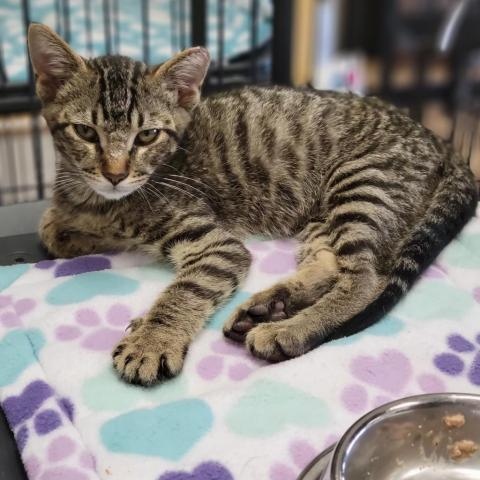
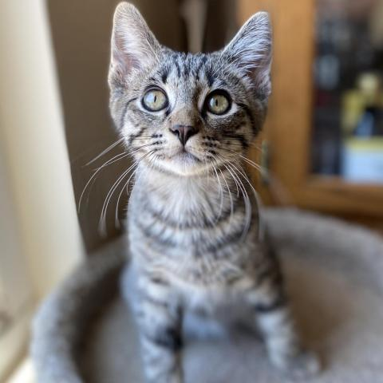

ADOPT WITH US AND BRING A NEW FAMILY HOME TODAY!
WeCat is a local kitten adoption service. We are dedicated to providing assistance to homeless and unwanted animals in Los Angeles and the surrounding areas.
Types of Kitten you can adoption:
- American Shorthair
- Bombay
- Calico
- Cornish Rex
- Domestic Shorthair
Feel free to ask us the breeds you are looking for.
Why adopt a cat over buying?
Did you know that over 1,000 people per hour run a search right here looking to adopt a pet? Pet adoption is quickly becoming the preferred way to find a new dog, puppy, cat or kitten. Best of all, there are so many benefits when you adopt a dog or adopt a cat over buying. For instance, pet adoption will almost always be more affordable than buying a puppy for sale from a breeder or finding a kitten for sale from a litter. There are more benefits as well. Since pets in rescues and shelters usually come from a home where the owners ran out of money, got divorced, or had to move, it's common to find that the dogs and cats on our website are already housetrained, good with kids, or do well with other pets. People are finding out that buying a puppy for sale from a breeder isn't all it's cracked up to be, and the dogs and cats don't leave the organization without having their shots and being taken to the vet. That means less stress, and more savings! So what are you waiting for? Go find that perfect pet!
Featured Pets

NO. A01001

NO. A01002

NO. A01003

NO. A01004

NO. A01005